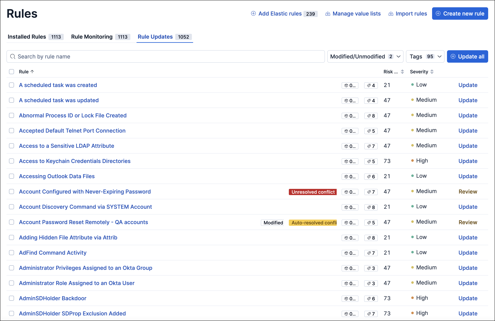
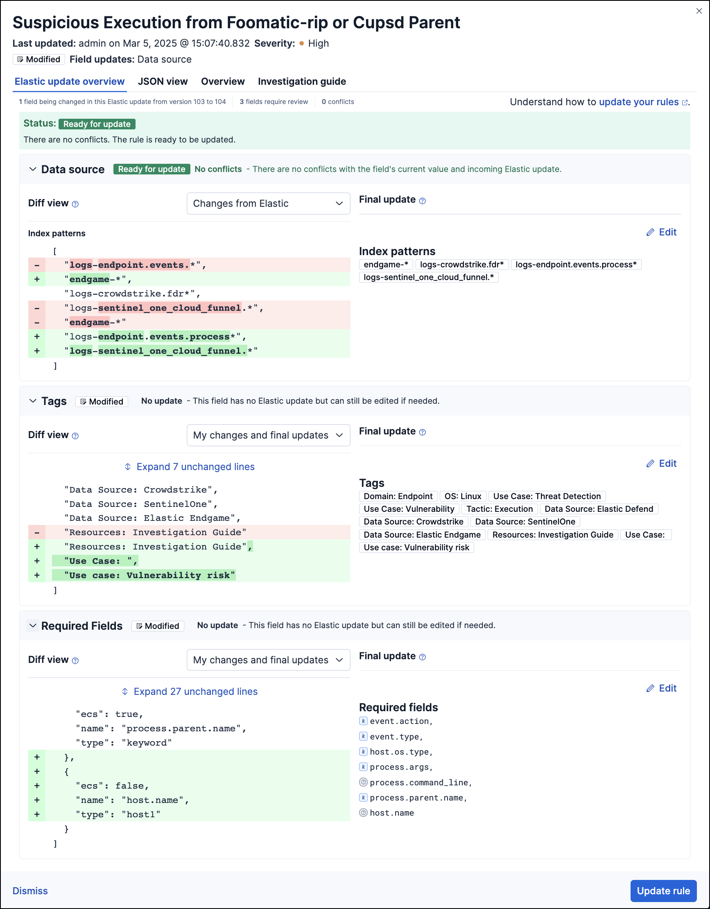

Update modified and unmodified Elastic prebuilt rules
editThis page provides instructions for updating modified and unmodified prebuilt rules. You can also find information about statuses or conflicts that you might encounter when updating rules.
To update rules:
- Find Detection rules (SIEM) in the navigation menu or by using the global search field.
-
In the Rules table, select the Rule Updates tab.
The Rule Updates tab doesn’t appear if all your installed prebuilt rules are up to date.
 -
(Optional) To examine the details of a rule’s latest version before you update it, select the rule name. This opens the rule update flyout, where you can:
- Preview incoming updates: Select the Elastic update overview tab to view rule changes field by field, or the JSON view tab to view changes for the entire rule in JSON format.
-
Compare different versions of a rule field: Use the Diff view drop-down menu to compare different versions of a rule field. For example, compare the changes that you made to the current version of the field with changes that will be applied from the incoming Elastic update.
If you haven’t updated the rule in a while, its original version might be unavailable for comparison. Instead, you will only have access to the rule’s current version and the incoming Elastic update. You can avoid this by updating prebuilt rules more often.
- Check the update status: View the status of the entire rule update and for each field that’s being changed.
- Address update conflicts: Find and address conflicts that need additional attention.
-
Edit the final update: Change the update that will be applied to the field when you update the rule. To change the update, go to the Final update section, make your changes, and then save them.
Elastic updates containing a rule type change cannot be edited. Before updating the rule, duplicate it if you need to record changes that you made to the rule fields.

-
From the Rule Updates tab, do one of the following to update prebuilt rules:
- Update all available rules: Click Update all. If any rules have conflicts, you will be prompted to take additional action.
- Update a single rule without conflicts: Click Update rule for that rule.
-
Update multiple rules: Select the rules and click Update x selected rule(s). If any rules have conflicts, you will be prompted to take additional action.
To find specific rules to update:
- Use the Modified/Unmodified drop-down menu to only display modified or unmodified prebuilt rules.
-
Use the search bar and Tags filter to find the rules you want to update. For example, filter by
OS: Windowsif your environment only includes Windows endpoints. For more on tag categories, refer to Prebuilt rule tags.
Understand rule field update statuses
editThis table describes statuses that might appear for rule fields being updated.
| Status | Description |
|---|---|
Ready for update |
Displays when there are no conflicts to resolve. Further action is not required for the field. It is ready to be updated. |
No update |
Displays when the field is not being updated by Elastic, but the current field value differs from the original one. This typically happens when the field’s value was changed after the prebuilt rule was initially installed. Further action is not required for the field. It is ready to be updated. You can still change the final field update, if needed. To do so, make your changes in the Final update section and save them. |
Review required |
Displays when Elastic auto-resolves a conflict between the current field value and the value from the incoming Elastic update. You must accept or edit the field’s final update and save the changes. Refer to Resolve and reduce update conflicts to learn more about auto-resolved conflicts and how to reduce future conflicts. |
Action required |
Displays when Elastic could not auto-resolve the conflict between the current field value and the value from the incoming Elastic update. You must manually set and save the field’s final update. Refer to Resolve and reduce update conflicts to learn more about conflicts that need manual fixes and how to reduce future conflicts. |
Resolve and reduce update conflicts
editKeeping prebuilt rules up to date might help you minimize the frequency and complexity of conflicts that occur during rule updates.
When a conflict does happen, Elastic attempts to resolve it and will suggest a fix for your review. This is called an auto-resolved conflict. You can still update rules with auto-resolved conflicts, but we advise against bulk-updating multiple rules as it’s risky and can sometimes lead to lost rule modifications and other issues. Instead, we recommend carefully reviewing each rule with auto-resolved conflicts from the rule update flyout.
If Elastic can’t resolve a conflict, you must manually fix it before updating the rule. This is called an unresolved conflict. To fix unresolved conflicts in a rule, do the following:
-
From the Rule update tab, click on the rule name or click Review. This opens the rule update flyout, where you can find rule fields with unresolved conflicts.
Fields with unresolved conflicts have the
Action requiredstatus. -
Go to the Final update section and do any of the following:
- Keep the current value instead of accepting the Elastic update.
- Accept the Elastic update and overwrite the current value.
- Edit the final field value by combining the current value with the Elastic update or making the appropriate changes.
-
Click Save and accept to apply your changes. The field’s status changes to
Ready for update.
After you’ve resolved the remaining conflicts, click Update rule to accept the changes and install the updated version.